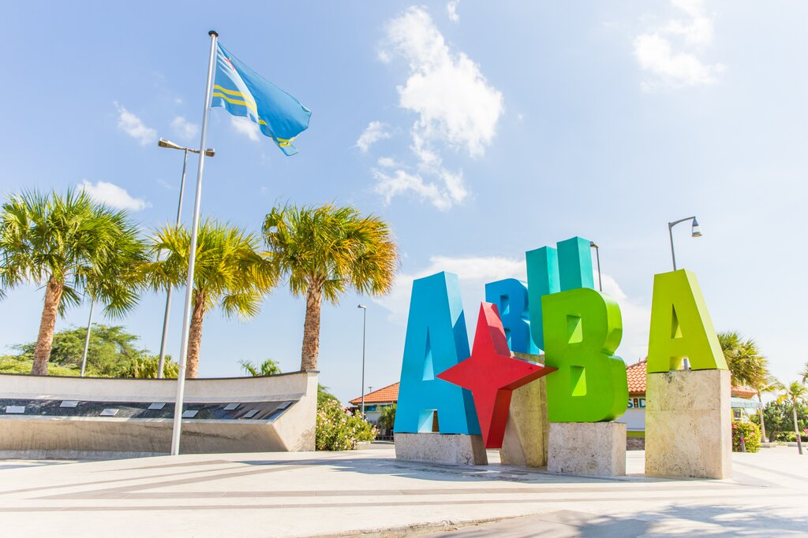

¡Queremos que crees recuerdos especiales con quienes más quieres! Por eso, compartimos contigo las razones por las cuales debes escogernos para disfrutar tus próximas vacaciones en nuestra Isla Feliz.
Aruba es conocida por sus hermosas playas y su clima perfecto, pero aquellos quienes se aventuran a recorrer la isla, seguramente, se sorprenderán con la variedad de actividades para realizar y conocer.
Ya sea buscar un momento de tranquilidad, emoción y aventura, experiencias culturales o tener una escapada romántica , Aruba tiene todo lo que necesita. ¡Con tantas cosas divertidas para hacer en Aruba, seguramente se puede encontrar una actividad, lugar de interés, atracción o un evento que se adapte a todas las necesidades y gustos!